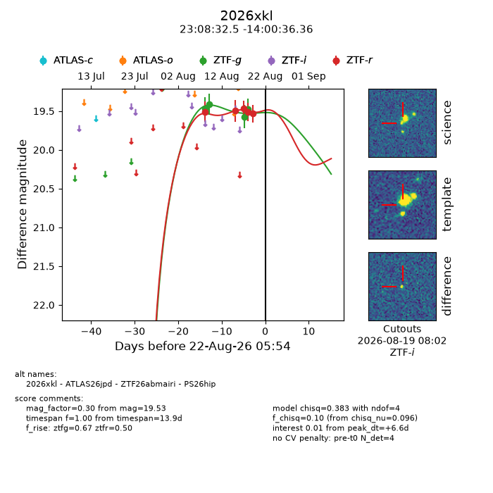
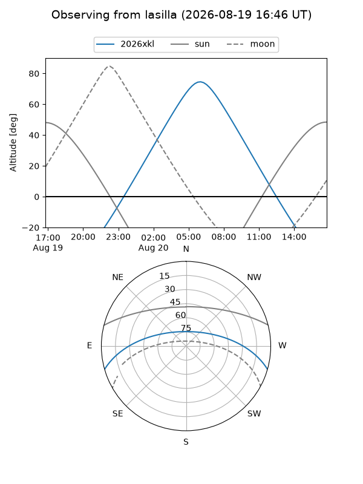
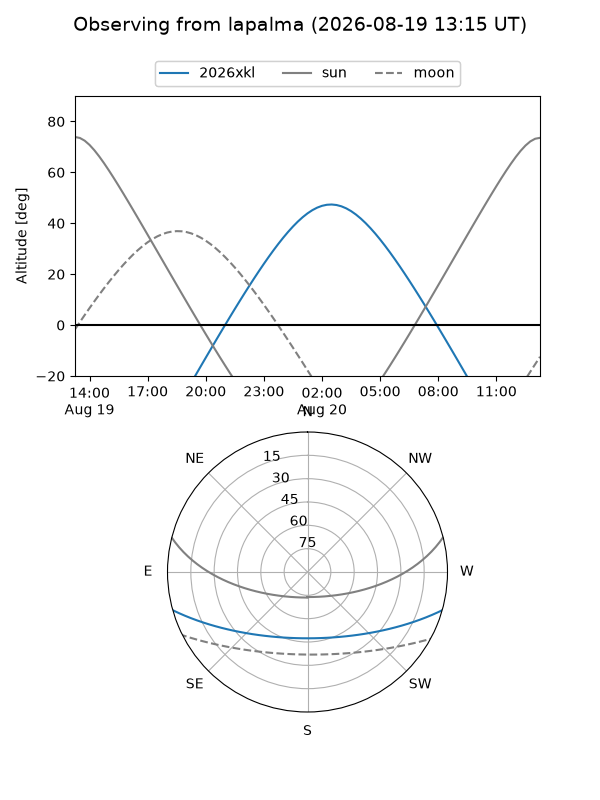
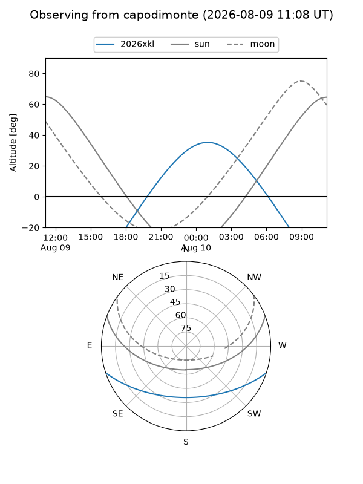
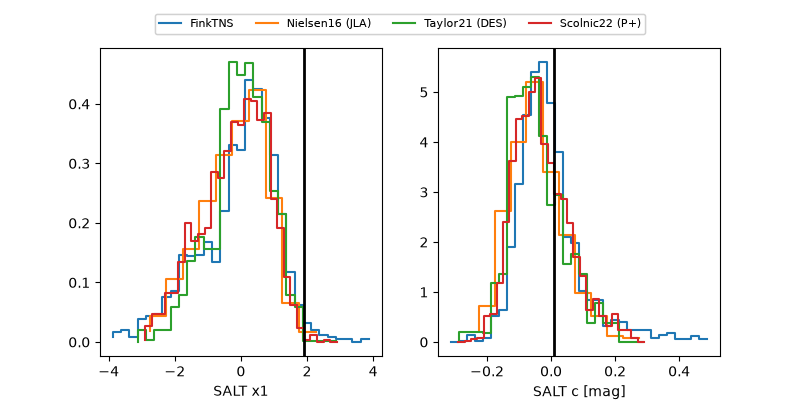

2026xkl
Target 2026xkl at 2026-08-22 05:57
Aliases and brokers:
FINK-ZTF: ztf.fink-portal.org/ZTF26abmairi
Lasair-ZTF: lasair-ztf.lsst.ac.uk/objects/ZTF26abmairi
ALeRCE-ZTF: alerce.online/object/ZTF26abmairi
YSE-PZ: ziggy.ucolick.org/yse/transient_detail/2026xkl
TNS name: wis-tns.org/object/2026xkl
Direct TNS query: direct search
alt names
ZTF26abmairi (ztf,fink_ztf)
2026xkl (tns,yse)
ATLAS26jpd (atlas)
PS26hip (panstarrs)
Coordinates:
equatorial (ra, dec) = 347.1354,-14.01010
equatorial (HMS+DMS) = 23:08:32.50,-14:00:36.36
galactic (l, b) = (56.4323,-62.66358)
Flags:
TNS type: nan
peak dt: +6.6
Photometry:
last ztfg=19.48, ztfr=19.53
4 ztfg, 5 ztfr detections
Lightcurve

Visibility



Additional plots
